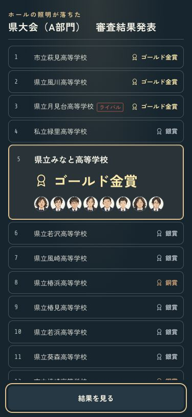
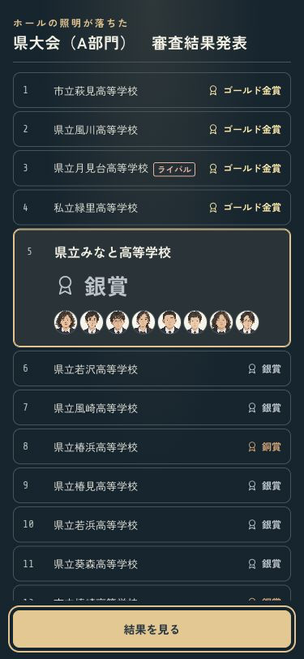
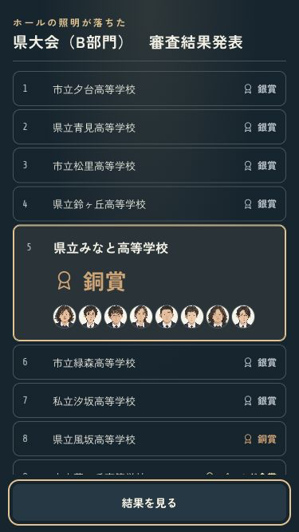
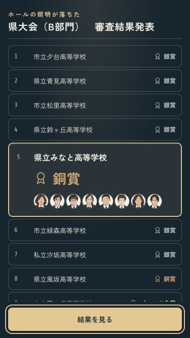

B · 舞台の中へ
結果を見て、次へ進む。
発表中は結果画面の中で操作。終わったら「結果を見る」へ、閉じたら次の行動へ戻ります。一覧もキーボードで読み返せます。
Escapeは発表中なら残りを表示し、もう一度押すと結果を閉じます。Tabで一覧へ移り、矢印・Home・Endで読み返せます。確認ページはセーブを書き換えません。


小さい画面・B部門も確認


iPhoneへ導入済み。端末がロック中のため、今回は起動未確認です。ミラーリングなし。
codex/design · pushなし · 変更と確認の記録